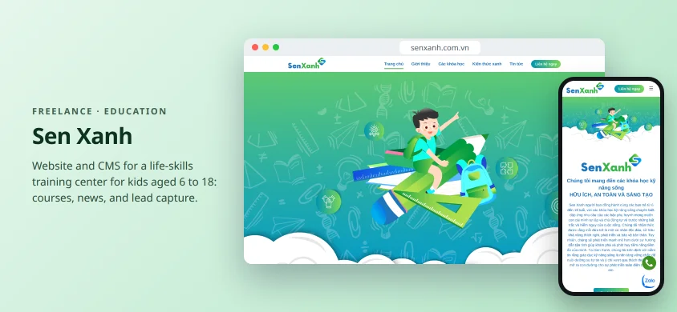
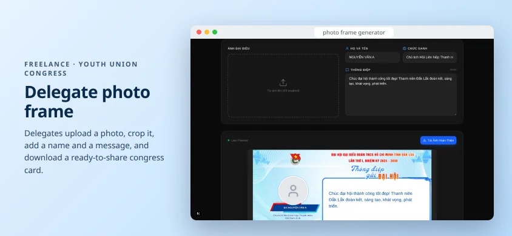

PROJECTS
Projects
Everything I have built: products at work, freelance projects for clients, and tools I made for myself.
15 projects

Filum CX
Omnichannel customer engagement platform: one inbox for 10+ channels, backed by 80+ integrations.
Next.js · Node.js · GCP · Redis
View project →
Ask about Hau
Kai, a chat assistant that answers questions about me from my CV only. Measured with a 30-question eval, runs on a 4 GB GPU, with a costed plan to go online.
Next.js · AI SDK · Ollama · pgvector
View project →
Vietnam Fatherland Front Congress 2026
Interactive website for the 11th National Congress of the Vietnam Fatherland Front, with content managed in a CMS.
Next.js · Strapi · PostgreSQL · S3
View project →
Tính Điểm Online
Free grade and GPA calculator for Vietnamese students, with 2,500+ visits a month.
Next.js · Tailwind · MDX
View project →
Bida 8 Bi
Online 8-ball pool to play with friends: no lag, no ads, just send a room code. Vibe coded to fix my own pain point.
Three.js · MQTT · PWA
View project →
Filum website
Marketing site and landing pages, powered by Strapi CMS and self-hosted WordPress.
Next.js · Strapi · WordPress
View project →
Mysheo Study
Learning management system built from scratch to production with a team of seven.
Next.js · Express.js · MariaDB · Redis
View project →
Filum internal tools
Admin dashboard, AI-powered CV screening, and data pipelines for Marketing, HR, and Operations.
Next.js · Node.js · Python · Webhooks
View project →
Tạo QR Online
Free QR code generator: links, Wi-Fi, vCard, VietQR payments, custom logo, and a camera scanner.
Next.js · qr-code-styling · jsQR
View project →
Sen Xanh
Website and CMS for a life-skills training center for kids aged 6 to 18.
Next.js · Ant Design · Strapi
View project →
Congress delegate photo frame
Delegates upload a photo, add a name and a message, and download a ready-to-share congress card.
Next.js · html-to-image · AWS S3
View project →
claude-notify
A Claude Code plugin that plays a sound and shows a notification when Claude needs you, only if you’re away from the terminal.
Claude Code hooks · Bash · Python
View project →
Mysheo Flex
Campaign landing pages for English courses, built and shipped with a team of three.
Next.js · TypeScript · Material UI
View project →
Linux NitroSense
Fan and keyboard backlight control for the Acer Nitro 5 on Linux, by writing directly to the embedded controller.
Python · Linux EC · systemd
View project →
Lofi Panel
A lofi radio in the Linux top panel, with a dancing pixel cat, live equalizer, and 15 stations.
Python · GTK · GStreamer
View project →